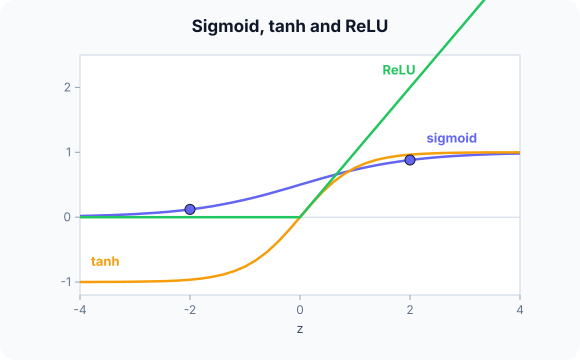

Prerequisites
- The artificial neuron.
- Exponentials $e^z$.
- Derivatives (slopes), for the gradient discussion.
The analogy
Everyday analogy
Think of different volume knobs. A sigmoid is a dimmer that never fully reaches off or on; tanh is the same dimmer centred on zero; ReLU is a switch that's off for negatives and passes positives straight through.
Softmax is different: it's a vote counter that turns several scores into shares of 100%.
How it works
The five functions: $\sigma(z) = \frac{1}{1 + e^{-z}}$, $\tanh(z) = \frac{e^z - e^{-z}}{e^z + e^{-z}}$, $\text{ReLU}(z) = \max(0, z)$, $\text{LeakyReLU}(z) = \max(0.01z, z)$, $\text{softmax}(z)_i = \frac{e^{z_i}}{\sum_j e^{z_j}}$.
Start with three scores by hand
Apply each function to $z = -2, 0, 2$. Use $e^{-2} \approx 0.135$ and $e^{2} \approx 7.389$. Predict, then open "Check".
Example: predict before you read
Step 1. Sigmoid of −2, 0, 2.
Check
$1/(1 + 7.389) \approx 0.119$, $0.5$, $1/(1 + 0.135) \approx 0.881$.
Step 2. Cover the next line and guess: tanh and ReLU of −2, 0, 2.
Check
tanh: −0.964, 0, 0.964. ReLU: 0, 0, 2.
Step 3. Softmax of the vector $[-2, 0, 2]$.
Check
Exponentials 0.135, 1, 7.389, sum 8.524: $[0.016, 0.117, 0.867]$.

Quick recall: Before reading further, cover the text above and say out loud: which activation outputs values centred on zero?
Check your answer
tanh, with outputs between −1 and 1 and $\tanh(0) = 0$.
Finish the picture: slopes matter
Training multiplies slopes (derivatives) layer after layer.
- Sigmoid slope $\sigma(z)(1 - \sigma(z))$ at $z = 0$ and $z = 2$. Predict both.
Check
0.25 at $z = 0$ (its maximum) and $0.881 \cdot 0.119 \approx 0.105$ at $z = 2$. Ten layers at 0.25 multiply to about $10^{-6}$.
- ReLU slope for positive $z$, and Leaky ReLU at $z = -2$. Predict both.
Check
ReLU: 1, so gradients pass unchanged. Leaky ReLU at −2: slope 0.01 and output −0.02, so a neuron is never completely "dead".
Quick recall: Without scrolling up, say out loud: why do sigmoid gradients get small in deep networks?
Check your answer
Its slope is at most 0.25 and near 0 for large $|z|$; multiplying many such slopes through the layers shrinks the gradient towards 0.
Full worked calculation
The three scores $z = -2, 0, 2$ pushed through every activation, with the arithmetic shown, then the derivatives. The derivatives decide how well gradients survive through many layers.
| $z$ | Sigmoid | Tanh | ReLU | Leaky ReLU (0.01) | Softmax (all three) |
|---|---|---|---|---|---|
| −2 | 0.119 | −0.964 | 0 | −0.02 | 0.016 |
| 0 | 0.5 | 0 | 0 | 0 | 0.117 |
| 2 | 0.881 | 0.964 | 2 | 2 | 0.867 |
-
1Sigmoid
$$\sigma(2) = \frac{1}{1 + e^{-2}} = \frac{1}{1 + 0.1353} = 0.881, \qquad \sigma(-2) = 1 - \sigma(2) = 0.119$$The sigmoid is symmetric around 0.5: $\sigma(-z) = 1 - \sigma(z)$. You only need to compute one side.
-
2Tanh
$$\tanh(2) = \frac{e^{2} - e^{-2}}{e^{2} + e^{-2}} = \frac{7.389 - 0.135}{7.389 + 0.135} = 0.964$$Tanh is a stretched sigmoid ($\tanh z = 2\sigma(2z) - 1$) with outputs centred on 0, which tends to make the next layer's learning easier.
-
3ReLU and Leaky ReLU
$$\text{ReLU}(-2) = 0, \quad \text{ReLU}(2) = 2, \qquad \text{Leaky}(-2) = 0.01 \cdot (-2) = -0.02$$ReLU costs one comparison. The leaky version keeps a small slope for negatives so the neuron never becomes completely silent.
-
4Softmax over the three scores
$$e^{z} = [0.135,\; 1,\; 7.389], \quad \sum = 8.524 \;\Rightarrow\; \left[\tfrac{0.135}{8.524}, \tfrac{1}{8.524}, \tfrac{7.389}{8.524}\right] = [0.016,\; 0.117,\; 0.867]$$Softmax is different: it uses all the scores at once and returns probabilities that sum to 1. A gap of 2 between scores becomes a ratio of $e^2 \approx 7.4$ between probabilities.
-
5Derivatives at z = 2
$$\sigma'(2) = 0.881 \cdot 0.119 = 0.105, \qquad \tanh'(2) = 1 - 0.964^2 = 0.071, \qquad \text{ReLU}'(2) = 1$$At $z = 2$ the sigmoid and tanh are already flattening out, so their slopes are small. ReLU keeps a slope of exactly 1 for any positive input.
-
6Why it matters: 5 layers deep
$$\text{best case sigmoid: } 0.25^5 \approx 0.001, \qquad \text{ReLU (active path): } 1^5 = 1$$Backpropagation multiplies one derivative per layer. Even at its steepest the sigmoid's slope is 0.25, so after 5 layers the gradient is at most 0.1% of its size: the vanishing gradient. This is the main reason hidden layers use ReLU.
What the numbers tell us
Sigmoid and tanh squash into a fixed range and have small slopes for large $|z|$; ReLU is cheap and keeps a slope of 1 for positive inputs.
Use ReLU (or a variant) in hidden layers, sigmoid for a single yes/no output, softmax for a choice among several classes.
The rule in plain words
Hidden layers: use ReLU (or Leaky ReLU / GELU) by default; tanh for some recurrent nets.
Output layer: sigmoid for one yes/no probability, softmax for one-of-$K$ classes, nothing (linear) for regression.
Quick recall: Before you read the code, describe how to compute softmax, in your own words. Then check below.
Check your answer
Exponentiate every score, add them up, and divide each exponential by that sum (subtracting the largest score first, for numerical safety).
The code
Read this code after you have computed the values by hand. It will make more sense.
double relu(double z) { return z > 0 ? z : 0; }
double leaky_relu(double z) { return z > 0 ? z : 0.01 * z; }
double sigmoid(double z) { return 1 / (1 + exp(-z)); }
void softmax(double z[], int k, double out[]) {
double mx = z[0], sum = 0;
for (int i = 1; i < k; i++) if (z[i] > mx) mx = z[i];
for (int i = 0; i < k; i++) { out[i] = exp(z[i] - mx); sum += out[i]; } /* shift for safety */
for (int i = 0; i < k; i++) out[i] /= sum;
}Definition
What you just did, in one line: an activation function is the non-linear function applied to a neuron's weighted sum; common ones are sigmoid, tanh, ReLU, Leaky ReLU, and softmax for multi-class outputs.
flowchart TD
A{"Which layer?"} -->|hidden| H["ReLU (default) or Leaky ReLU / GELU"]
A -->|output| B{"What do you predict?"}
B -->|"one probability (yes/no)"| S["sigmoid"]
B -->|"one of K classes"| SM["softmax"]
B -->|"a real number"| L["linear (no activation)"]
Putting numbers on it
Quick recall: Before looking at the formula, predict: what is the slope of ReLU for $z = 2$ and for $z = -2$?
Check your answer
1 for $z = 2$, 0 for $z = -2$.
The derivatives that backpropagation multiplies through the layers:
$$\sigma'(z) = \sigma(z)(1 - \sigma(z)) \le 0.25, \qquad \tanh'(z) = 1 - \tanh^2(z) \le 1, \qquad \text{ReLU}'(z) = \begin{cases} 1 & z > 0 \\ 0 & z < 0 \end{cases}$$| Function | $z = -2$ | $z = 0$ | $z = 2$ | Range |
|---|---|---|---|---|
| Sigmoid | 0.119 | 0.5 | 0.881 | (0, 1) |
| Tanh | −0.964 | 0 | 0.964 | (−1, 1) |
| ReLU | 0 | 0 | 2 | [0, ∞) |
| Leaky ReLU (0.01) | −0.02 | 0 | 2 | (−∞, ∞) |
| Softmax of $[-2, 0, 2]$ | 0.016 | 0.117 | 0.867 | sums to 1 |
Warning
ReLU neurons can "die": if a neuron's $z$ becomes negative for every input, its slope is 0 and it never updates again. A too-high learning rate makes this more likely; Leaky ReLU avoids it.
Exam tip
Know the value and the slope of each function at 0: sigmoid (0.5, 0.25), tanh (0, 1), ReLU (0, undefined: 0 or 1 by convention). And which one goes on which output.
Common mistakes
- Using softmax for multi-label problems (several classes can be true at once), where independent sigmoids are right.
- Using a sigmoid output with an unbounded regression target.
- Computing softmax without subtracting the maximum, which overflows for large scores.
Try it yourself
Exercise 1 (warm-up)
Compute ReLU and sigmoid of $z = 1$.
Hint
$e^{-1} \approx 0.368$.
Answer
ReLU(1) = 1; $\sigma(1) = 1/1.368 \approx 0.731$.
Exercise 2 (a bit harder)
Compute softmax of $[1, 2, 3]$, then of $[101, 102, 103]$. What do you notice, and why does the code subtract the maximum? Write your answer down before you open it.
Show answer
Both give $[0.090, 0.245, 0.665]$: softmax only depends on differences between scores. Subtracting the max changes nothing mathematically but keeps $e^{103}$ from overflowing.
Did you know?
Did you know?
ReLU was popularised for deep networks around 2010–2012; AlexNet (2012) reported training about six times faster with ReLU than with tanh.
Large language models often use smooth ReLU-like functions such as GELU or SwiGLU in their feed-forward layers.
Key points to remember
If you remember one thing from each line, remember the because.
- Sigmoid suits a single probability because it maps any score into (0, 1).
- Softmax suits one-of-$K$ classes because its outputs are positive and sum to 1.
- ReLU trains deep nets well because its slope is 1 for positive inputs, so gradients don't shrink.
- Sigmoid and tanh saturate because their slopes approach 0 for large $|z|$.
- Leaky ReLU avoids dead neurons because it keeps a small slope for negative inputs.
Self-check questions
Answer these in order, out loud. They follow the page, so your answers become the script of your video.
- How are sigmoid, tanh, ReLU and softmax like different knobs?
Sample answer
Sigmoid and tanh are dimmers that never fully switch, ReLU is an off/through switch, and softmax is a counter that splits 100% among several options.
- Compute sigmoid, tanh and ReLU of $-2, 0, 2$, and softmax of $[-2, 0, 2]$.
Sample answer
Sigmoid 0.12, 0.5, 0.88; tanh −0.96, 0, 0.96; ReLU 0, 0, 2; softmax 0.016, 0.117, 0.867.
- Why does
softmaxsubtractmxbefore exponentiating?A good answer mentions overflow and differences.
Sample answer
Large scores would make $e^z$ overflow. Softmax only depends on differences between scores, so subtracting the maximum gives the same result safely.
- So what is an activation function, in one sentence?
Sample answer
The non-linear function applied to a neuron's weighted sum, which lets networks represent non-linear patterns.
- Why did ReLU replace sigmoid in hidden layers?
A good answer compares slopes.
Sample answer
Sigmoid's slope is at most 0.25, so gradients shrink layer after layer; ReLU's slope is 1 for positive inputs, so gradients pass through deep networks.
- What are the ranges and slopes at 0 of sigmoid and tanh?
Sample answer
Sigmoid: (0, 1), slope 0.25 at 0. Tanh: (−1, 1), slope 1 at 0.
- Which activation goes on the output for regression, binary and multi-class problems?
Sample answer
Linear (none), sigmoid, and softmax.
- If you had to teach this to a friend in 2 minutes, what would you leave out, and why?
Sample answer
I'd leave out Leaky ReLU and the softmax overflow trick. I'd keep the knob analogy, the values at −2, 0, 2, and "ReLU inside, sigmoid/softmax at the output".
External resources
- Wikipedia: Activation function: a table of functions and their properties.
- PyTorch docs: Non-linear activations: every activation available in PyTorch.
- Stanford CS231n: Activation functions: practical advice on choosing them.
Videos
- YouTube search: activation functions explained: pick a short visual overview.